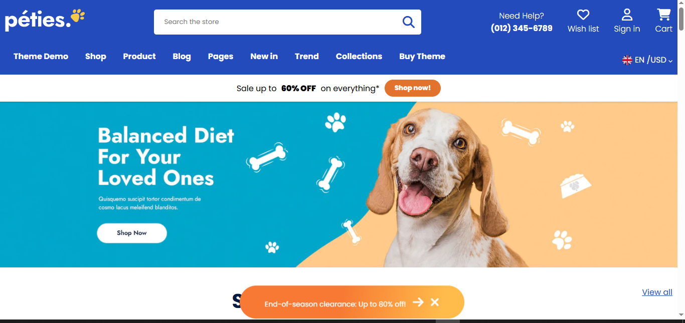
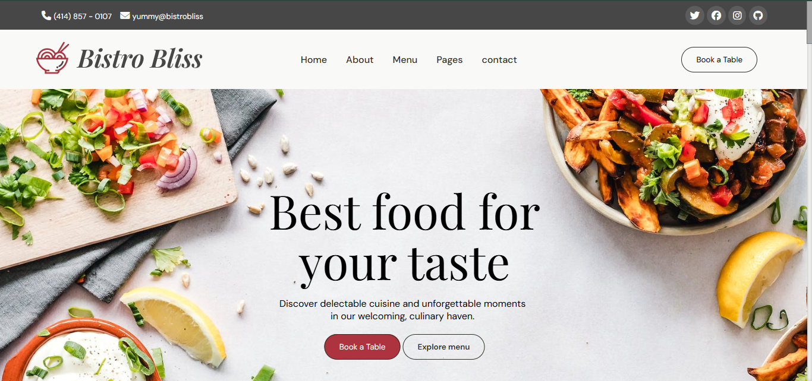
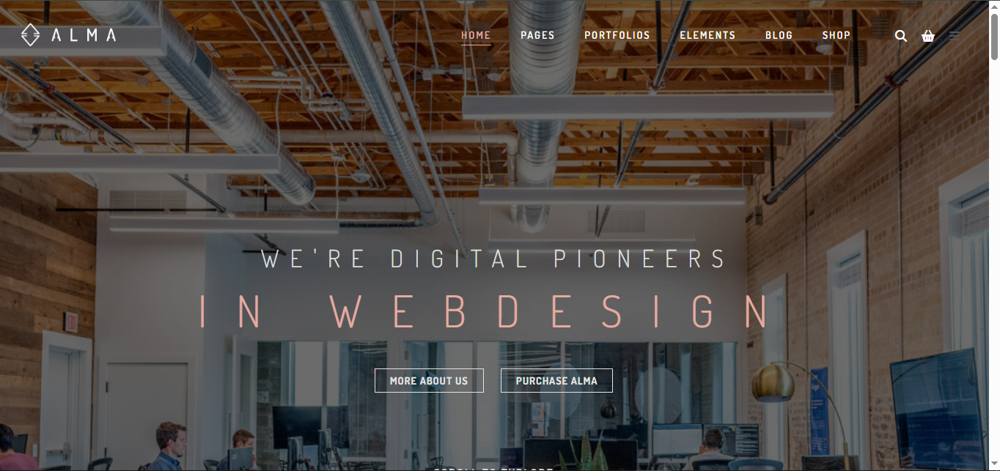

Responsive Websites

Peties Website
A clean, responsive pet care website with vibrant visuals and user-friendly layout.
Visit Site

Bristo Bliss
Restaurant theme showcasing elegant design and menu sections in a responsive layout.
Visit SiteDashboard
Non-Responsive (Desktop Only)

Alma Website
A desktop-focused business layout with clean visual structure and sections.
Visit Site